Class 9 Lecture Demonstration Lab
Fall 2025 | NINT5380 - CRN2189
Mapping Vulnerability + Spatial Statistics
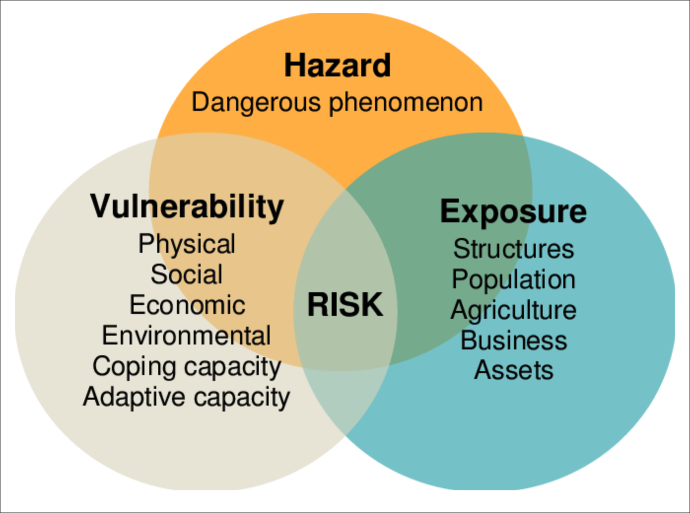
Part I: Explore SVI vulnerability dataset + Histogram and Statistic Tool
To start, we will access the latest 2020 SVI dataset for US Counties:
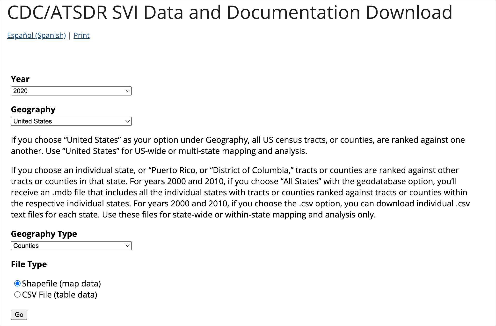
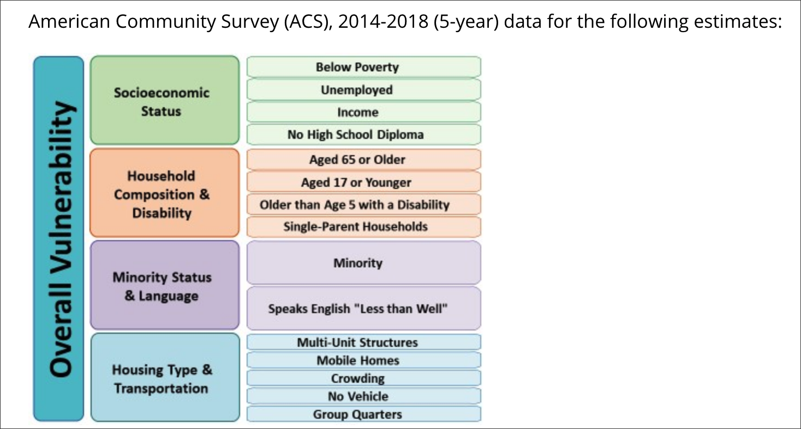
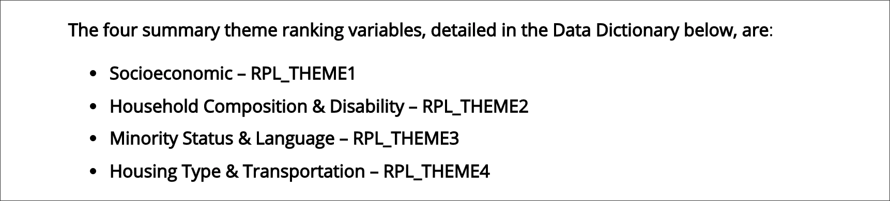
As discussed in the 2020 CDC SOVI Model documentation, the dataset’s theme structure is scored based on a percentile rank. Percentile scoring highlights the ‘below’ values for any percentile position within the dataset.
A percentile is a comparison score between a particular score and the scores of the rest of a group. It shows the percentage of scores that a particular score surpassed.
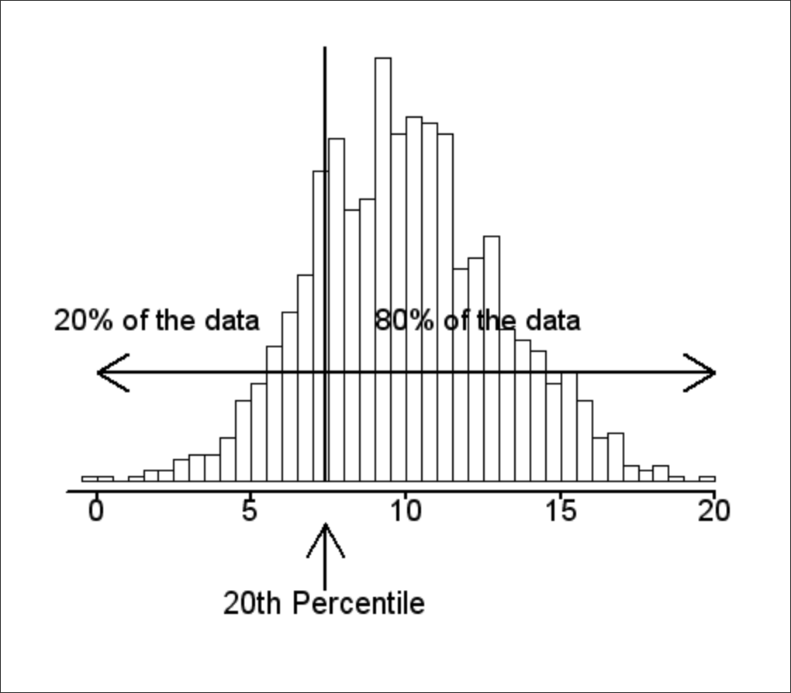
Relative to a quartile statistical approach, the following statements can be made about the percentile approach to scoring:
- The 25th percentile is also called the first quartile.
- The 50th percentile is generally the median.
- The 75th percentile is also called the third quartile.
- The difference between the third and first quartiles is the interquartile range.
With QGIS open and pointed to the datasource SVI2020_US_COUNTY, first map on RPL_THEMES and explore the percentile approach in the mapping:
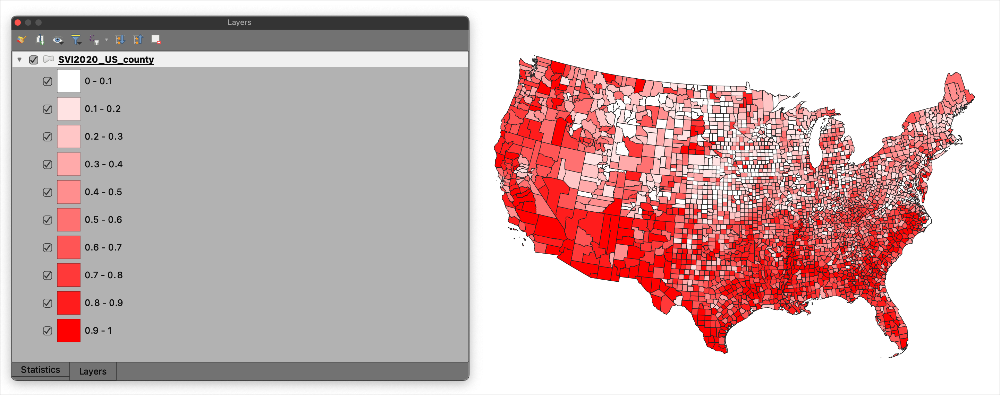
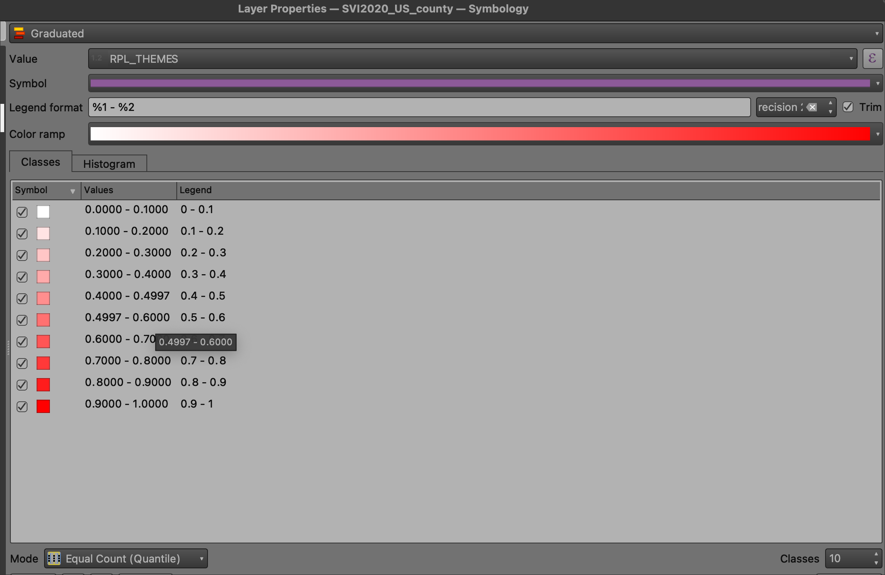
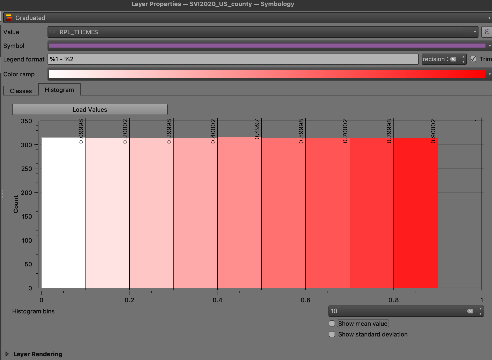
Next, access the Show Statistical Summary tool from the main toolbar and point it to the RPL_THEMES variable:
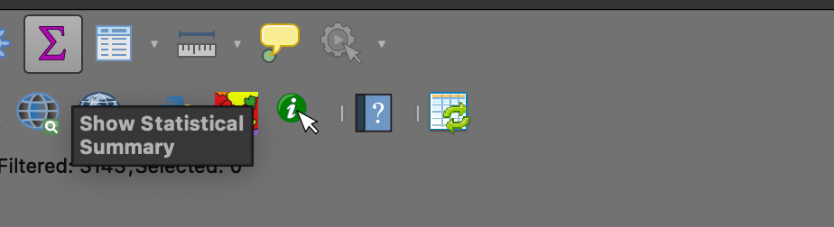
The statistical summary for RPL_THEMES shows this variable is normalized 0-1. Note the following CDC SOVI methods statement for its scoring:
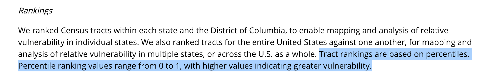
Next, utilize Python Console to develop a percentile profile of the estimated population for all US Counties - E_TOTPOP:
- Open the Python Console:
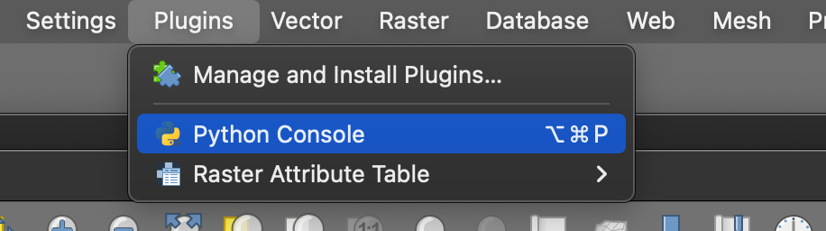
- Copy and then input the following code snippet to the console and run the code:
import numpy as np
lyr = QgsProject.instance().mapLayersByName('SVI2020_US_county')[0]
fieldname = 'E_TOTPOP'
data =[f[fieldname] for f in lyr.getFeatures()]
for p in [0,5,10,20,30,40,50,60,70,80,90,100]:
print("{0} th percentile is: {1}".format(p, np.percentile(data, p)))

Part II: Linear Scale Interpolation
Following a statistical exploration of the RPL_THEMES and E_TOTPOP variables, we will turn to the variable EP_AGE17 - percentage of persons age 17 and younger, estimated. Note that this is not the absolute value population; it is already a lower-level normalization. Run the Show Statistical Summary tool on variable EP_AGE17:
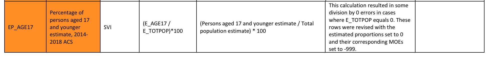 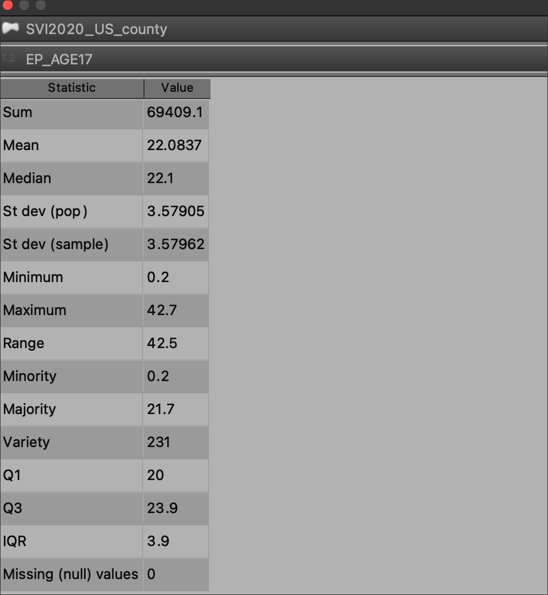
From the Statistical Summary, the attribute EP_AGE17 has the following minimum and maximum values:
MIN =
0.2MAX =
42.7
The universe of values can be anywhere from 0.2 upwards to 42.7. With linear interpolation the goal is to ‘remap’ these original values to a more standardized, ‘simple’ scale. For our purposes we will map the values to 1 > 10.
The scale_linear function transforms a given value from an input domain to an output range using linear interpolation.
With the Field Calculator open, we will create a new column LIN_S_17, type integer, and populate using a linear scale math function as follows:
scale_linear("EP_AGE17", 0.2, 42.7 , 1, 10)
Part III: Min - Max Normalization
While Linear Interpolation is simple and quick, its not necessarily the most precise scaling method available. The resulting scale may not capture breakpoints best suited to a particular mapping output. Another typical approach is Min - Max Normalization. The following equation is utilized for this normalization:
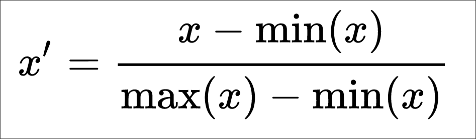
Using the formula, the following equation can be applied to a new column in Field Calculator titled MM_17, type decimal:
Formula = X new = (X – X min) / (X max – X min)
Translated to the EP_AGE17 attribute:
("EP_AGE17" - 0.2) / (42.7 - 0.2)
The Min - Max Normalization can also be performed for a custom range, i.e. 1 > 10 as opposed to 0 > 1 as we have done thus far. The formula for this normalization is as follows:
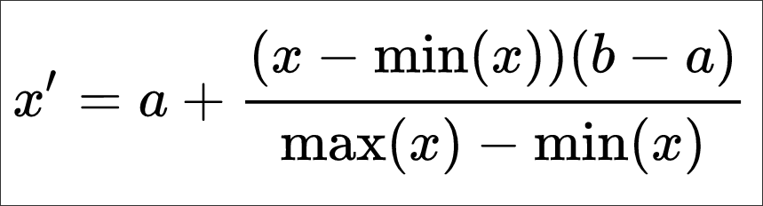
a and b are the min-max values of the attribute array.
Part IV - Beyond Normalization - How to create Clusters of Similarity
The purpose of normalization is typically to normalize multiple variables across different measurements in order to create consistency in a final scoring mechanism. We can hand over a final scoring process to a clustering algorithm that will ‘compare’ or ‘evaluate’ the values in one variable column to those of other variable columns, resulting in ‘similar’ groupings or clusters. The disadvantage of this approach is that the resulting clusters don’t show ‘directionality’; that is, we can’t see in the categorical result of the clustering process any ‘more’ or ‘less’ measurement, just that the resulting clusters are of similar pattern between the variables inside the cluster and dissimilar outside the cluster.
With clustering - also known as group analysis, we may want to find cluster patterns between two variables as follows:
Housing in structures with 10 or more units -
EP_MUNITPersons aged 17 and younger -
EP_AGE17
In QGIS there is a clustering tool that utilizes several algorithm options. For the demonstration we will use the K Means method in the tool.
First, add the plugin to QGIS - Attribute based clustering:
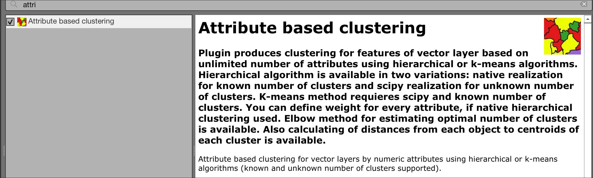
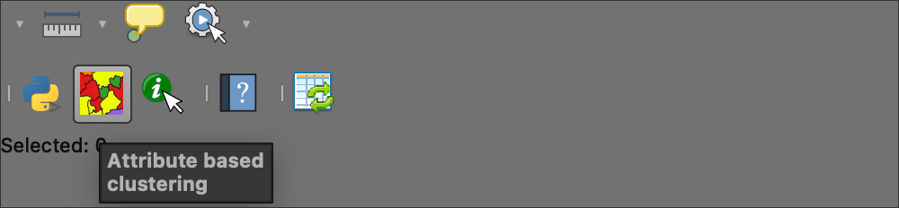
Next, Populate the tool as follows. Note that normalize attributes is toggled ON; in effect this instructs the tool to normalize each attribute so that outliers do not overly impact the resulting clusters:
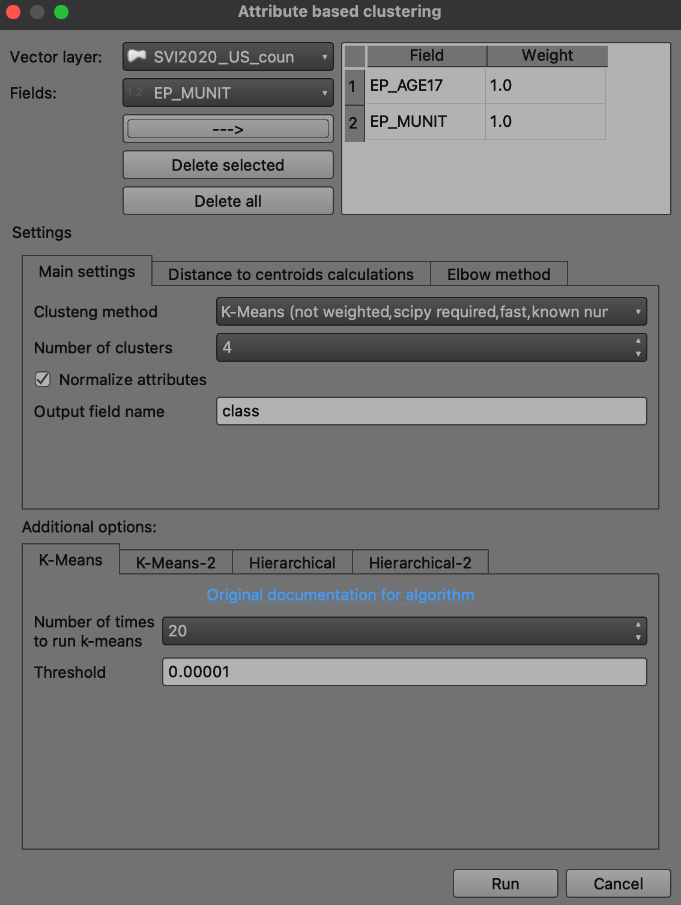